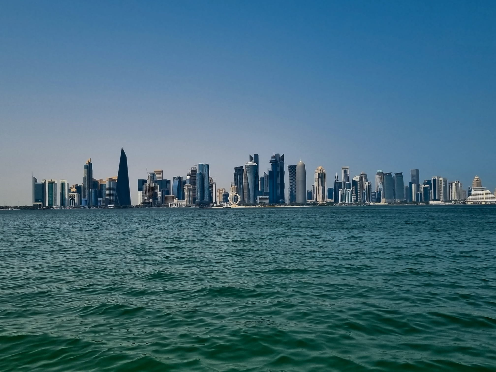
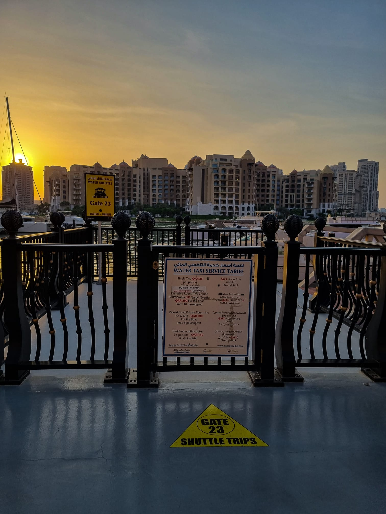
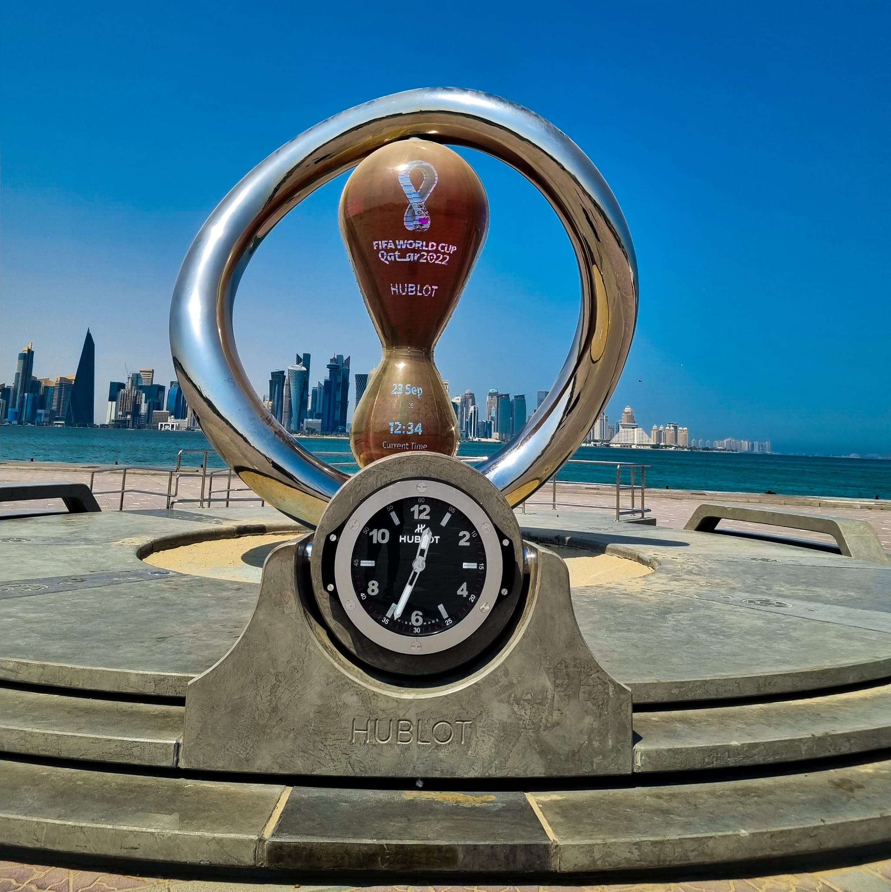
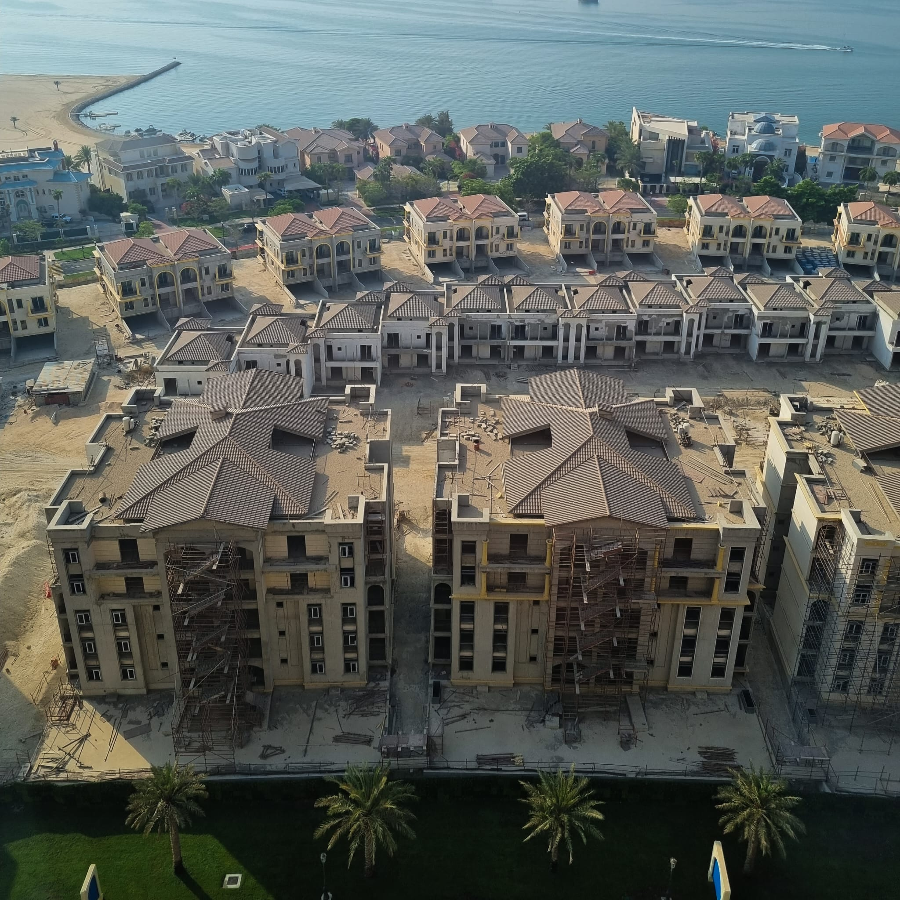

¿Qué saber antes de viajar a Qatar?
Echa un vistazo al visado, principales atracciones, divisa y cultura.
El Visado
Para entrar en Qatar se requiere de visado, a menos que el turista provenga de uno de los países exemptos de este. Como los países dentro del Consejo de Cooperación para los Estados Árabes del Golfo (CCEAG).
- Baréin
- Kuwait
- Arabia Saudita
- Emiratos Árabes Unidos
- Qatar
01
¿Qué hacer en Qatar?
En un rincón del mundo donde las arenas del tiempo se encuentran con el mar del futuro, se erige Doha, la capital de Qatar. Esta metrópolis emergente, anclada en el Golfo Pérsico, es un crisol de culturas y un testimonio de la visión futurista. A medida que exploramos sus calles, descubrimos un fascinante equilibrio entre la modernidad deslumbrante y las tradiciones ancestrales.
Doha es un escenario donde los rascacielos se alzan con orgullo junto a los mercados tradicionales, ofrece una ventana al alma de un país que se ha transformado de un tranquilo enclave pesquero a un centro global de innovación y lujo. El Corniche es un símbolo de la evolución de Qatar, mientras que el souq Waqif, con su laberinto de callejuelas, nos habla de un pasado que pervive en el corazón de Doha.
En esta tierra donde el arte y la arquitectura se funden, cada esquina cuenta una historia, cada estructura es un diálogo entre el ayer y el mañana. Desde los museos de arte islámico hasta las islas artificiales como The Pearl, Doha se revela como un mosaico de experiencias, un lugar donde cada paso es un descubrimiento, cada vista una puerta a un mundo de posibilidades.

Corniche:
El Corniche de Doha es un paseo marítimo que se extiende a lo largo de la bahía de la ciudad, ofreciendo vistas impresionantes del skyline de rascacielos. Es un lugar popular tanto para locales como para turistas, ideal para caminatas, carreras o simplemente para disfrutar de la vista del mar. A lo largo de la Corniche, puedes ver dhow tradicionales, barcos de madera, anclados cerca de la orilla. Este lugar es perfecto para experimentar la mezcla de lo antiguo y lo nuevo de Doha. Durante la noche, el Corniche se ilumina, creando un ambiente especial con el reflejo de las luces en el agua.
The Pearl
En The Pearl-Qatar, Qanat Quartier y Porto Arabia se destacan por su estilo y ambiente únicos. Qanat Quartier, con sus canales al estilo veneciano y arquitectura colorida, es perfecto para aquellos que buscan una experiencia encantadora. Sus calles peatonales y puentes pintorescos invitan a paseos tranquilos, y sus cafeterías y tiendas boutique ofrecen una experiencia de ocio y compras distintiva.
Porto Arabia, por otro lado, es un destino imprescindible para los amantes del lujo. Con su elegante marina y rascacielos en semicirculo, este barrio ofrece una amplia gama de tiendas de alta gama y restaurantes de primera categoría, ideales para una experiencia culinaria y de compras de clase mundial.
Además, las vistas al mar desde sus cafés y terrazas son espectaculares, perfectas para relajarse después de un día explorando Doha. Ambos barrios proporcionan una visión moderna y lujosa de la vida en Qatar, atrayendo a viajeros que buscan disfrutar de la opulencia y la belleza en un entorno único.


El Impacto de la Copa del Mundo
La Copa Mundial de la FIFA en Qatar ha sido un poderoso catalizador para el desarrollo de Doha, introduciendo notables mejoras en infraestructura y opciones turísticas. El sistema de metro de Doha, moderno y eficiente, facilita el desplazamiento por la ciudad y conecta puntos clave, incluyendo el recién inaugurado estadio Al-Janoub, una maravilla arquitectónica.
Además, Doha ha enriquecido su oferta cultural con espacios como el Museo Nacional de Qatar, diseñado por el renombrado arquitecto Jean Nouvel, y el recién ampliado Museo de Arte Islámico. Para los amantes de las compras y el entretenimiento, el complejo Al Janoub y la expansión de la famosa área de la Pearl ofrecen experiencias de ocio de clase mundial.
Los visitantes también pueden disfrutar de los nuevos espacios verdes y parques urbanos, como el Parque Al Bidda, perfecto para un relajante día al aire libre. Estas adiciones no solo mejoran la calidad de vida en Doha sino que también ofrecen a los viajeros una gama más amplia de actividades y atracciones para explorar.
Vivir en Doha Cobrando 2,000€/mes
Con un ingreso de 2.000 euros al mes trabajando en línea, vivir en Doha como expatriado puede presentar ciertos desafíos y oportunidades. Aquí te detallo cómo sería la vida con ese presupuesto:
1. Alojamiento: Con 2.000 euros, es probable que debas buscar opciones de vivienda más económicas. Los apartamentos compartidos o estudios en áreas como Al Sadd o Al Mansoura pueden ser más asequibles. Los alquileres en zonas premium como The Pearl pueden estar fuera de alcance.
2. Costo de Vida: Doha es una ciudad donde el costo de vida puede ser alto, especialmente en lo que respecta a comestibles, ocio y transporte. Con un presupuesto ajustado, tendrás que planificar cuidadosamente tus gastos.
3. Transporte: Doha tiene un sistema de transporte público en desarrollo, pero muchas personas optan por alquilar un coche para mayor comodidad. Dependiendo de tu ubicación, esto podría ser una necesidad.
4. Estilo de Vida: Con este ingreso, es posible que tengas que limitar las salidas a restaurantes caros o actividades de ocio costosas. Sin embargo, Doha ofrece muchas actividades y lugares para visitar gratuitos o a bajo costo.
5. Socialización y Comunidad: Hay una gran comunidad de expatriados en Doha, y muchas actividades y eventos están orientados a ellos. Puedes encontrar grupos o actividades que se ajusten a tu presupuesto.
6. Ahorro y Gastos Adicionales: Es importante tener en cuenta que con un presupuesto de 2.000 euros, ahorrar puede ser difícil, especialmente si tienes gastos adicionales como seguros, atención médica, o quieres viajar.
En resumen, vivir en Doha con un salario de 2.000 euros al mes es factible, pero requerirá una gestión cuidadosa del presupuesto y posiblemente hacer algunos ajustes en el estilo de vida y las expectativas de alojamiento.

02
¿Qué tener en cuenta al viajar a estos paises?
2. Para los ciudadanos españoles que deseen viajar a los países del Consejo de Cooperación del Golfo (GCC), los requisitos de visa varían según el país. Aquí tienes un resumen detallado:
-
- Visa: Se requiere visa.
- Tipo de Visa: e-Visa para turismo o visa de negocios.
- Cómo Obtenerla: La e-Visa puede obtenerse en línea a través del portal oficial de visas electrónicas de Arabia Saudita.
- Arabia Saudita
-
- Visa: Se requiere visa.
- Tipo de Visa: Exención de visa, válida por 30 días y prorrogable por otros 30.
- Cómo Obtenerla: Se otorga a la llegada en el aeropuerto.
- Emiratos Árabes Unidos
-
- Visa: Se requiere visa.
- Tipo de Visa: Exención de visa, válida por 30 días y prorrogable por otros 30.
- Cómo Obtenerla: Se otorga a la llegada en el aeropuerto
- Qatar
-
- Visa: Se requiere visa.
- Tipo de Visa: e-Visa.
- Cómo Obtenerla: La e-Visa se puede obtener en línea antes del viaje, o una visa a la llegada en el aeropuerto.
- Kuwait
-
- Visa: Se requiere visa.
- Tipo de Visa: e-Visa.
- Cómo Obtenerla: La e-Visa se debe obtener en línea antes del viaje a través del sitio web oficial de e-Visa de Omán.
- Oman
-
- Visa: Se requiere visa.
- Tipo de Visa: e-Visa.
- Cómo Obtenerla: La e-Visa se puede obtener en línea antes del viaje a través del portal oficial de visas electrónicas de Baréin.
- Bahrein
Para todos los casos, es recomendable verificar los requisitos más actuales antes del viaje, ya que las políticas de visas pueden cambiar. Además, asegúrate de que tu pasaporte tenga una validez mínima de seis meses desde la fecha de entrada al país.